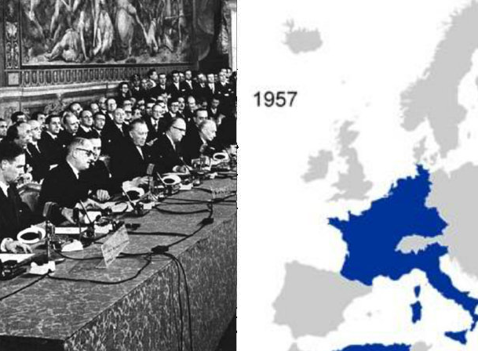

| En 1942, los americanos y parte de los Aliados llegan a Argelia donde Francia reconstituye su ejército.
En 1943, Italia es invadida por los americanos, los ingleses y los franceses. Córcega es liberada. Los rusos obligan a los alemanes a rendirse en Stalingrado. La guerra sigue a pesar de todo en Europa, en África y en Asia. En 1944, Inglaterra y América organizan un desembarco en Normandía (Francia). Poco a poco consiguen liberar Europa de los alemanes y de la dictadura nazi. |
El 25 de agosto de 1944, la ciudad de París es liberada gracias al ejército y a la Resistencia.
En 1945, los rusos e ingleses entran en Alemania. El 30 de abril, Hitler se suicida con su esposa, y el 8 de mayo, Alemania se rinde.
Los americanos siguen destruyendo la flota japonesa que se resiste y no quiere rendirse. Los americanos deciden entonces utilizar la bomba atómica.
El 6 de agosto de 1945, lanzan una bomba atómica en la ciudad de Hiroshima, y dos días más tarde, en la ciudad de Nagasaki. Se van a producir más de 150 000 víctimas.
El 2 de septiembre de 1945, Japón se rinde definitivamente.
La Segunda Guerra mundial habrá provocado más de 60 millones de víctimas, entre las cuales numerosos civiles. Es la guerra del horror
El 6 de junio de 1944, las fuerzas aliadas desembarcan por fin en las costas de Normandía entre Cherburgo y El Havre. Consiguen atravesar el muro del Atlántico protegido por los alemanes. En agosto, otro ejército de los Aliados entra por el sur entre Tolón (Toulon) y Marsella.
Las fuerzas de los Aliados descubren los campos de concentración y los responsables alemanes serán juzgados, y posteriormente, condenados a muerte para ser ejecutados.
| La Organización de Naciones Unidas (ONU) es creada para preservar la paz en 1945. ONU | En 1957, Alemania, Francia, los Países Bajos, Bélgica, Italia y Luxemburgo firman el Tratado de Roma para formar la Comunidad Económica Europea (CEE) pero mayormente para evitar futuras guerras.
 |


{kind=link}
{kind=link}
{kind=link}
{kind=link}
{kind=link}